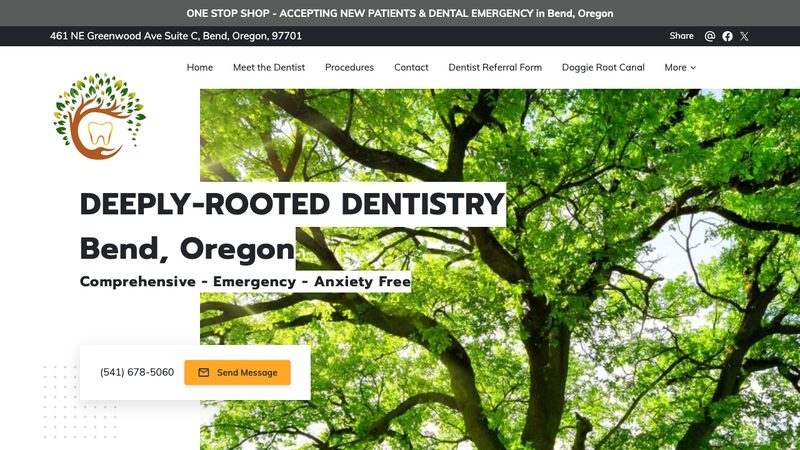
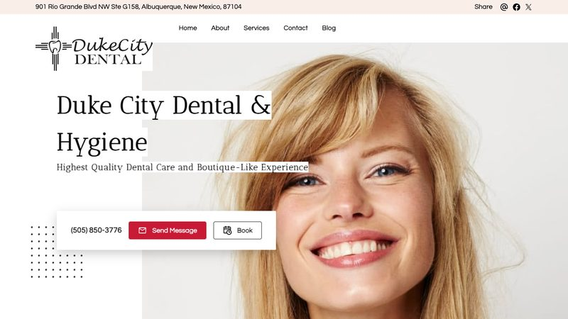

Calm, welcoming sites that turn a first visit into a booked appointment. 3 real, live dental websites, reviewed and critiqued. Third-party sites — not our clients.
Bloomingdale Dental Center
Bloomingdale, IL · https://mybloomingdaledentist.com · loads in 0.60s

Why it is here: Advertises a $99 new-patient exam and same-day emergencies, with hours and address in the footer.
What it does well
- The H1 “A Dentist in Bloomingdale Who Remembers Your Name” sells the personal experience, not just the service.
- A $99 new-patient exam is a concrete offer that lowers the barrier to a first visit.
- Services, hours and directions are all in the footer, which is helpful for a local practice.
What could be better
- The homepage uses only one image, so the page feels visually thin for a health and beauty business.
- No online booking — the request form is the only way to book.
Deeply Rooted Dentistry
Bend, OR · https://deeplyrooteddentistry.com · loads in 0.69s

Why it is here: Shows 192 reviews and a highlights list (family-owned, veteran-owned, wheelchair accessible, parking, wifi).
What it does well
- The specialties are clearly separated (endodontics, oral surgery, periodontal, esthetics), so patients can self-select.
- The amenities list answers practical questions before the first call.
- A “dental emergencies” line makes it clear they take urgent cases.
What could be better
- Only three images on the homepage — the design could do more with photography.
- A cookie-consent popup covered the hero on first visit.
Duke City Dental
Albuquerque, NM · https://dukecitydental.com · loads in 0.70s

Why it is here: Shows 190 Google reviews and a “boutique dental care” positioning with family, Latino and female-owned badges.
What it does well
- The “boutique dental care” positioning and owner badges make it feel personal rather than corporate.
- A “Book your appointment” link and phone number are both in the footer.
- The review section is built into the homepage, not buried on a separate page.
What could be better
- Only four images on the homepage.
- The footer includes a visible “Powered by” credit and legal links that look templated.
Want a dental website like these?
Our template pack includes a ready-to-edit dental template with tap-to-call, service area, FAQ, contact form and LocalBusiness schema — plus nine other trades.
Get the 10-template pack for $49
Or start with the free guides.
← All examples by trade